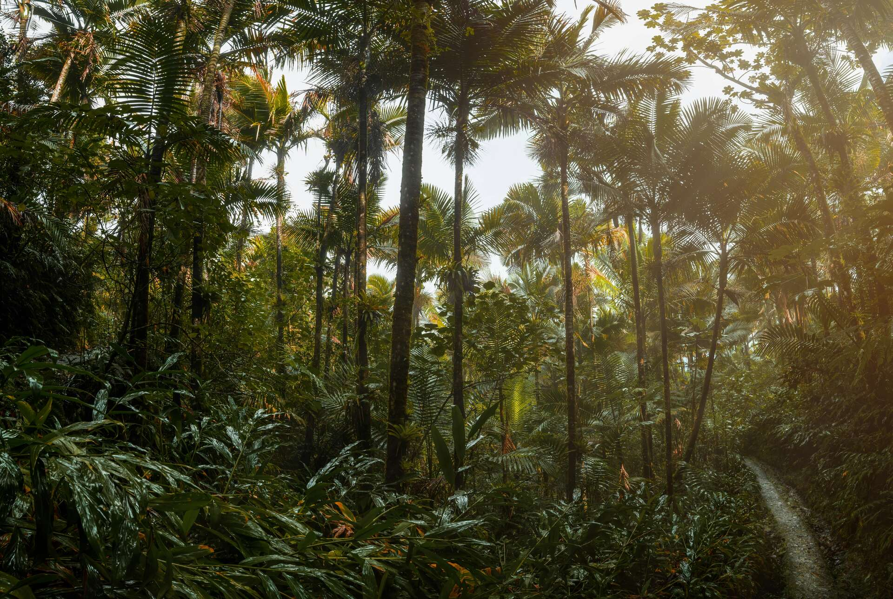

El Yunque: America's Only Tropical National Forest

Drive east from San Juan for about 45 minutes and the landscape transforms completely. The highway gives way to a two-lane road that climbs into cloud-draped mountains, and suddenly you're inside El Yunque — the only tropical rainforest in the entire US National Forest system. Every other National Forest in the country sits in a temperate zone. This one is different.
A Singular Place in American Public Land
El Yunque National Forest covers roughly 28,000 acres in the Sierra de Luquillo mountains of northeastern Puerto Rico. The US Forest Service has managed it since 1903, when President Theodore Roosevelt designated it a federal forest reserve — making it one of the oldest protected forests in US history. But its ecology sets it apart from every other National Forest: palm trees, tree ferns, and bromeliads replace the pines and oaks of the mainland, and rainfall averages around 100 inches per year at lower elevations, climbing to roughly 200 inches near the highest peaks.
That extraordinary rainfall feeds dozens of streams and cascading waterfalls. La Mina Falls is the most visited, a 35-foot curtain of water reached via an easy paved trail. Less crowded options include Juan Diego Falls and the more remote Yokahú Tower viewpoints, where on clear days you can see the entire northeast coast of Puerto Rico and the islands of Culebra and Vieques beyond.
Four Forest Types in a Single Mountain
What makes El Yunque ecologically remarkable is the vertical compression of distinct forest types. The lowest elevations hold tabonuco forest, dominated by the large, resin-producing tabonuco tree. Higher up, sierra palm forest takes over — a landscape of slender palms rising from a tangle of ferns and philodendrons. Above that, cloud forest cloaks the ridgelines in mosses and bromeliads that trap moisture directly from passing clouds. At the highest elevations, dwarf forest — locally called elfin woodland — produces gnarled, miniature trees shaped by constant wind and fog.
Within this compressed vertical world live more than 240 species of trees, around 50 species of orchids, and dozens of bird species found nowhere else on Earth, including the critically endangered Puerto Rican parrot, one of the rarest birds in the Western Hemisphere.
The Coqui at Every Turn
You don't need to see the rainforest at night to experience its most iconic resident. The coqui frog fills every hour with its two-note call. These tiny tree frogs — most are smaller than a quarter — are so embedded in Puerto Rican identity that their song registers as background silence to anyone who grew up on the island. In El Yunque, several species share the forest layers, each with a slightly different call and habitat preference.
After the Storms
Hurricane Maria in September 2017 stripped El Yunque nearly bare, removing up to 80 percent of the forest's leaf cover in a single night. The recovery has been remarkable — by several years after the storm, regrowth was already dense, and the forest today shows the resilience of tropical ecosystems. It also provided scientists a rare before-and-after window into how tropical forests respond to catastrophic disturbance.
Frequently Asked Questions
Why is El Yunque unique in the United States? El Yunque is the only tropical rainforest managed within the US National Forest system. No other National Forest contains a tropical rainforest ecosystem.
How much rain does El Yunque receive? Roughly 100 inches per year at lower elevations and up to around 200 inches near the peaks — one of the wettest places in the US.
Related Reading
Book a guided El Yunque rainforest tour
See El Yunque Tours →